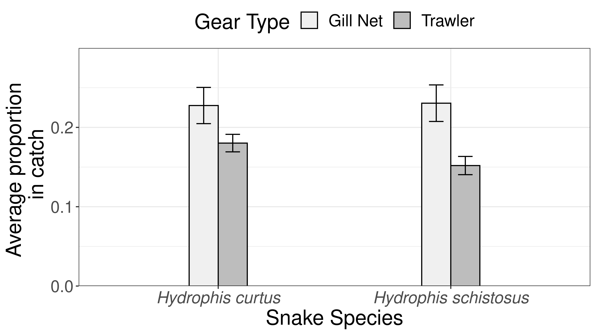

7 Overlap between fisheries catch and sea snake diet
# importing catch data
catch <- read.csv("./Data/catch.csv")
# importing gut content data
gutcontent <- read.csv("./Data/Sea_snakes_gut_content_2018-19.csv")
# Standarising sea snake gut content data
gutcontent = gutcontent%>%
# removing specimens collected from fish landing centers
filter(Snake.Species == "Hydrophis schistosus" | Snake.Species == "Hydrophis curtus",
# removing unidentified specimens
Prey.Family != "Unidentified", Prey.Family != "")%>%
group_by(Snake.Species)%>%
# caluclating abundance
mutate(n = n())%>%
group_by(Snake.Species, Prey.Family)%>%
# calculating relative abunance from each snakes species
summarise(Abundance = n(), n = last(n), Rel.prop = last(Abundance/n))Note: Catch data was combined from multiple sources (Sharma et al. unpublished data and Gupta et al. unpublished data). The same was standardised for this analysis. Kindly refer to Functions/clean catch data.R for further details.
7.1 Sampling Adequacy for fisherie catch data
# calculating number trips and fishing effort
catch%>%
group_by(Gear.Type, Sample)%>%
# Number hauls and haul duration for each trip
summarise(Haul.time = last(Haul.time),
No.hauls = last(No.hauls))%>%
group_by(Gear.Type)%>%
# Number trips and effort sampled by gear type
summarise(N = length(unique(Sample)),
Haul.Hours = sum(No.hauls*Haul.time, na.rm = T)/60)| Gear.Type | N | Haul.Hours |
|---|---|---|
| Gill Net | 38 | 35.41667 |
| Trawler | 140 | 434.65000 |
7.2 Difference in catch landed per trip by gear
# importing catch weight data
tonnage <- read.csv("./Data/catch tonnage.csv")
# Testing assumption of normality
broom::tidy(shapiro.test(log(tonnage$Total.Catch..kg.)))| statistic | p.value | method |
|---|---|---|
| 0.966559 | 0.0203415 | Shapiro-Wilk normality test |
# Test
broom::tidy(t.test(log(Total.Catch..kg.) ~ Gear.Type, data = tonnage))%>%
mutate(d = lsr::cohensD(log(Total.Catch..kg.) ~ Gear.Type, data = tonnage))%>%# effect size
dplyr::select(estimate1:p.value, d)%>%
# inverse log
mutate(estimate1 = exp(estimate1),
estimate2 = exp(estimate2))%>%
rename(`Gill net` = estimate1,
Trawler = estimate2)| Gill net | Trawler | statistic | p.value | d |
|---|---|---|---|---|
| 98.09173 | 226.0161 | -3.896286 | 0.0002104 | 0.8447173 |
Trawlers landed significantly higher catches per trip than gill nets.
Note: Total catch landed per trip in kgs was log transformed for normality.
7.3 Richness of fish families found in fisheries catch
#Richness
catch%>%
filter(Family != "")%>%
group_by(Gear.Type)%>%
summarise(Family.Richness = length(unique(Family)))| Gear.Type | Family.Richness |
|---|---|
| Gill Net | 15 |
| Trawler | 48 |
7.4 No. of Sea snake prey families found in fish catch and overlap
# Creating separate prey data frame for each species
gc.hs <- filter(gutcontent, Snake.Species == "Hydrophis schistosus")
gc.hc <- filter(gutcontent, Snake.Species == "Hydrophis curtus")
# Creating data martix for fisheries catch
catch_fam <- catch%>%
# removing unidentified speciemens
filter(Family != "")%>%
group_by(Gear.Type, Sample)%>%
# Calculating total weight per sample
mutate(Sample.Wt = sum(Weight.g, na.rm = T))%>%
group_by(Gear.Type, Sample, Family)%>%
# Weight of each fish family in catch
summarise(Biomass = sum(Weight.g, na.rm = T),
# Marking sea snake prey families
Prey = last(ifelse(Family%in%gutcontent$Prey.Family, "Yes", "No")),
Sample.Wt = last(Sample.Wt))%>%
# Caluclating relative proportion in catch
mutate(Rel.biomass = Biomass/Sample.Wt)#%>%
## Adding sea snake species
catch_fam = catch_fam%>%
mutate(HS = if_else(Family%in%gc.hs$Prey.Family, "Yes", "No"),
HC= if_else(Family%in%gc.hc$Prey.Family, "Yes", "No"))
# number of prey families caught by each gear
catch_fam%>%
gather(c("HC", "HS"), key = "Snake species", value = "Prey")%>%
filter(Prey == "Yes")%>%
group_by(Gear.Type, `Snake species`)%>%
summarise(`Prey Family Overlap` = length(unique(Family)))%>%
mutate(`Snake species` = ifelse(`Snake species` == "HC", "Hydrophis curtus", "Hydrophis schistosus"))| Gear.Type | Snake species | Prey Family Overlap |
|---|---|---|
| Gill Net | Hydrophis curtus | 7 |
| Gill Net | Hydrophis schistosus | 7 |
| Trawler | Hydrophis curtus | 9 |
| Trawler | Hydrophis schistosus | 10 |
Trawlers caught more sea snake prey families than gillnets.
7.5 Relative proportion of sea snake prey in fisheries catch
# prey of each species as relative proportion in fisheries catch
catch_fam%>%
gather(c("HC", "HS"), key = snake, value = Prey)%>%
filter(Prey == "Yes")%>%
group_by(Gear.Type, Sample, snake)%>%
summarise(N = length(unique(Family)),
Biomass = sum(Biomass),
Sample.Wt = last(Sample.Wt),
rel.prop = Biomass/Sample.Wt)%>%
group_by(Gear.Type, snake)%>%
summarise(Mean.prop = mean(rel.prop))| Gear.Type | snake | Mean.prop |
|---|---|---|
| Gill Net | HC | 0.8204191 |
| Gill Net | HS | 0.8188879 |
| Trawler | HC | 0.7356892 |
| Trawler | HS | 0.4842906 |
Sea snake prey consisted of a greater proportion of gillnet catch than trawler catch on average.
7.6 Is the proportion of H. curtus prey greater than that of H. schistosus in catch?
catch_fam%>%
gather(c("HC", "HS"), key = snake, value = Prey)%>%
filter(Prey == "Yes")%>%
group_by(Gear.Type, Sample, snake)%>%
summarise(Biomass = sum(Biomass),
Sample.Wt = last(Sample.Wt),
rel.prop = Biomass/Sample.Wt)%>%
group_by(Gear.Type)%>%
nest()%>%
mutate(ttest = map(data, ~t.test(rel.prop ~ snake, data = .)),
sumry = map(ttest, broom::tidy),
d = map(data, ~lsr::cohensD(rel.prop ~ snake, data = .)))%>%
dplyr::select(sumry, d)%>%
unnest()%>%
dplyr::select(Gear.Type:p.value, d, -estimate)%>%
rename(`H. curtus` = estimate1,
`H. schistosus` = estimate2)| Gear.Type | H. curtus | H. schistosus | statistic | p.value | d |
|---|---|---|---|---|---|
| Gill Net | 0.8204191 | 0.8188879 | 0.0412568 | 0.9672023 | 0.0094650 |
| Trawler | 0.7356892 | 0.4842906 | 7.0245510 | 0.0000000 | 0.8885814 |
Yes, for trawlers.
7.7 Do trawlers have a greater trophic overlap with sea snakes than gillnets?
catch_fam%>%
gather(c("HC", "HS"), key = snake, value = Prey)%>%
filter(Prey == "Yes")%>%
group_by(Gear.Type, Sample, snake)%>%
summarise(Biomass = sum(Biomass),
Sample.Wt = last(Sample.Wt),
rel.prop = Biomass/Sample.Wt)%>%
group_by(snake)%>%
nest()%>%
mutate(ttest = map(data, ~t.test(rel.prop ~ Gear.Type, data = .)),
sumry = map(ttest, broom::tidy),
d = map(data, ~lsr::cohensD(rel.prop ~ Gear.Type, data = .)))%>%
dplyr::select(sumry, d)%>%
unnest()%>%
dplyr::select(snake:p.value, d, -estimate)%>%
rename(`Gill net` = estimate1,
Trawler = estimate2)| snake | Gill net | Trawler | statistic | p.value | d |
|---|---|---|---|---|---|
| HC | 0.8204191 | 0.7356892 | 2.469163 | 0.0153629 | 0.3588295 |
| HS | 0.8188879 | 0.4842906 | 8.695296 | 0.0000000 | 1.1771718 |
Yes.
7.8 Sea snake prey species in fisheries catch
Species constituting >10% of the catch on average are represented.
catch_fam%>%
gather(c("HC", "HS"), key = "snake", value = "Prey")%>%
filter(Prey == "Yes")%>%
group_by(Gear.Type, Family)%>%
summarise(N = length(unique(Family)),
p = mean(Rel.biomass, na.rm = T))%>%
ggplot(aes(reorder(Family, p), p))+
geom_col(width = 0.5)+
scale_fill_brewer(palette = "Greys")+
labs(x = "Fish Family", y = "Average proportion in catch")+
scale_y_sqrt()+
theme(axis.text.x = element_text(angle = 60, hjust = 1, face = "italic"))+
facet_wrap(~Gear.Type, ncol = 1)